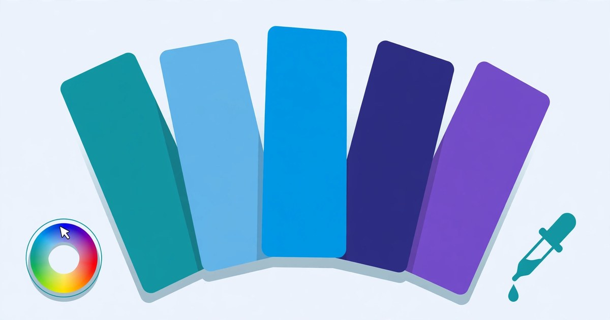

How to Create a Colour Palette Online
Turn one colour into five that work together — free, in seconds, no signup.
November 8, 2026 · 6 min read

Open the Colour Palette Generator, pick a base colour, choose a harmony — analogous, complementary, triadic or monochromatic — and the tool builds a five-colour palette instantly. Click any swatch to copy its HEX code. Free, no signup, everything in your browser.
Choosing colours is the part of a design that most often goes wrong: colours that clash, text nobody can read, a page where every element shouts at once. Harmony is not guesswork — it is a small set of rules about where colours sit on the wheel, and this tool applies them for you.
What the Colour Palette Generator does
The tool starts with a base colour of #4F8FF7, a bright blue, and the Analogous scheme selected. It shows five swatches, each labelled with its HEX code. Change the base colour or pick a different scheme and the palette rebuilds immediately — there is no generate button to press and no waiting.
Four schemes. Analogous takes colours near your base, five steps from 45 degrees below it to 45 degrees above it. Complementary pairs your base with its opposite colour, then adds a darker and a lighter version of each. Triadic takes three colours spaced 120 degrees apart, plus a darker and a lighter version. Monochromatic keeps your exact hue and saturation and steps the lightness through 20, 35, 50, 65 and 80 percent.
Clicking any swatch copies its HEX code to your clipboard and shows a short confirmation note. Shuffle picks a completely random base colour and rebuilds the palette with the same scheme — the quickest way to browse ideas. Nothing is uploaded anywhere: the colours are calculated in your browser, and nothing is saved when you close the page.
Create a colour palette in 5 steps
- Open the Colour Palette Generator — it loads instantly, no account needed.
- Pick your base colour. Click the colour field and choose the colour your design starts from — a brand colour, a favourite, or one sampled from an image.
- Choose a harmony scheme. Analogous for a calm, matching set; Complementary for a bold accent; Triadic for three balanced colours; Monochromatic for shades of one colour.
- Read the palette. Five swatches appear, each labelled with its HEX code. Try another scheme on the same base — the change is instant.
- Copy the codes you need. Click a swatch to copy its HEX code, then paste it into your CSS, design tool or notes. Hit Shuffle for fresh ideas with the same scheme.
A worked example: one base colour, four palettes
Start with the tool's default base colour, #4F8FF7 — a vivid blue: hue 217.1 degrees, saturation 91.3 percent, lightness 63.9 percent. Here is exactly what each scheme makes from it:
Analogous — five hues from 45 degrees below the base to 45 degrees above it, same saturation and lightness: #4FF7E1 (teal), #4FCDF7 (sky blue), #4F8FF7 (the base blue), #4F51F7 (indigo) and #8D4FF7 (violet). Neighbours on the wheel, so the set feels calm and connected.
Complementary — the base plus its opposite hue, 217.1 + 180 = 37.1 degrees, an amber, with a darker and a lighter version of each side: #4F8FF7, #F7B74F (amber), #0954CD (deep blue), #FCE3BA (pale amber) and #BAD3FC (pale blue). Blue against amber is the classic high-contrast pairing — use the amber sparingly.
Triadic — three hues 120 degrees apart, 217.1, 337.1 and 97.1 degrees, plus a darker blue and a lighter pink: #4F8FF7, #F74F8F (pink), #8FF74F (green), #0950C3 (deep blue) and #FBA7C7 (pale pink). Lively, but no single colour dominates.
Monochromatic — the same hue and saturation at five lightness steps, 20, 35, 50, 65 and 80 percent: #042862 (navy), #0846AB, #0B64F4, #5492F7 and #9DC1FB (pale blue). One colour, five depths — the safest choice for a clean, single-brand look.
A worked example: which colours can carry text?
A pretty palette is not enough — text must be readable on it. The usual guideline is a contrast ratio of at least 4.5 to 1 for normal body text. Against white, the example above tells the story:
The base blue #4F8FF7 scores 3.18 to 1 against white — below the guideline, so it suits headings and buttons, not body text. The darkest monochromatic swatch, #042862, scores 14.14 to 1 — white text on it is easy to read. The lightest swatch, #9DC1FB, scores only 1.83 to 1 — white text on it is nearly invisible, so use it as a background or a border, never behind text.
The rule is simple: text colours from the dark end, backgrounds from the light end. If your palette is mostly light, use its darkest swatch for the text and the contrast problem disappears.
Which scheme should you pick?
The four schemes solve different problems — pick by what the design needs:
| Scheme | What it does | Best for |
|---|---|---|
| Analogous | Near your base, 45 degrees either side | Calm, matching backgrounds and gradients |
| Complementary | Base plus its opposite hue, light and dark versions | Bold accents, buttons and calls to action |
| Triadic | Three hues 120 degrees apart | Playful designs needing three balanced colours |
| Monochromatic | One hue, five lightness steps, 20 to 80 percent | Clean, minimal designs on one brand colour |
Unsure? Start with Monochromatic — a single hue cannot clash.
5 mistakes that make a colour palette look wrong
- Using all five colours in equal amounts. A palette is a hierarchy, not a rota: one colour for most of the page, a second for a third, the rest as small accents — the 60-30-10 rule.
- Putting body text on the lightest swatch. Pale blue on white scores under 2 to 1 — readable to nobody. Text belongs on the darkest colours.
- Using a full-strength complementary pair over large areas. Blue and amber at full saturation vibrate against each other — keep one as a small accent and let the other dominate.
- Typing HEX codes from memory. One wrong character gives a different colour — click the swatch and paste the copied code instead.
- Using a different palette on every page. Copy the five codes into your stylesheet once and reuse them everywhere, or the site will look like five different sites.
Frequently asked questions
Is the Colour Palette Generator really free?
Yes. Every scheme, every palette and every copy is free, with no account and no signup — and nothing to install.
How do I copy a HEX code from the palette?
Click the swatch. The tool copies that colour's HEX code, for example #4F8FF7, to your clipboard and shows a short confirmation note. Paste it into your CSS or design tool.
What does the Shuffle button do?
Shuffle picks a completely random base colour and rebuilds the palette with the scheme you already have selected. Keep shuffling until a palette catches your eye, then copy the codes you like.
Does the tool save my palettes?
No. Nothing is uploaded or stored, so a palette disappears when you close the page — copy the HEX codes you want to keep first.
Related tools: Colour Palette Generator · Colour Picker · Gradient Generator · Favicon Generator · Image Format Converter